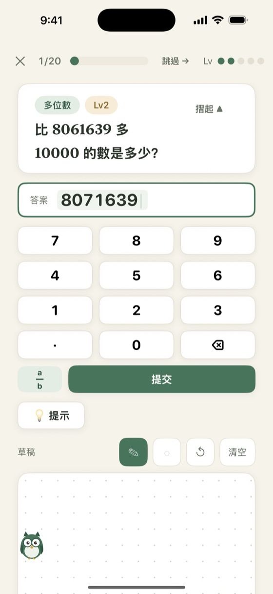
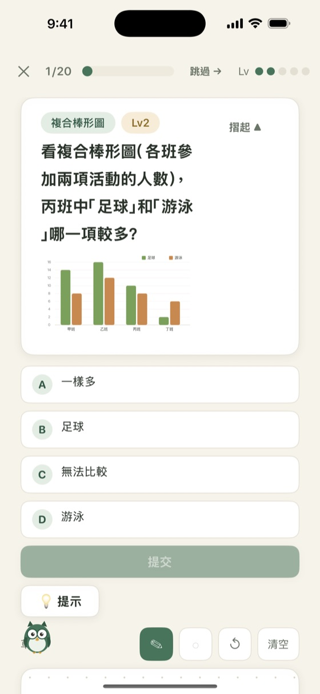
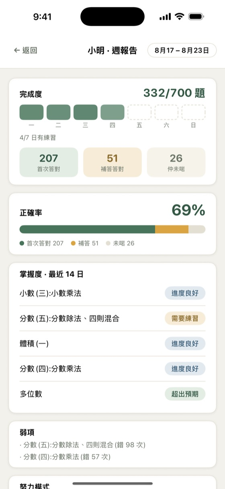
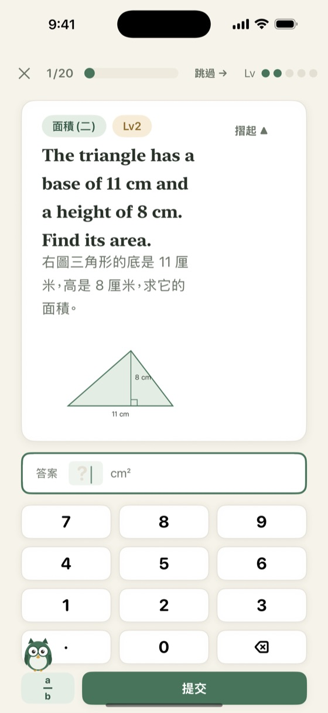

Built on the Hong Kong primary maths curriculum, Primary 1 to 6. MathApp shows which topics your child hasn't got yet — and which were just careless slips.

From basic addition to percentages, speed and 3D shapes. Each question is written for one topic, never pulled at random.
A wrong answer brings a hint, not the solution. Mistakes come back later for review until they stick.
Shapes, charts, measurement and direction questions that need a picture — the kinds found in real school papers.
100 quick calculations a day, the same set for everyone in the grade. Scored on accuracy and speed against a target — no leaderboards.
A PIN-protected parent area shows what your child did, which topics are weak and recent mistakes. Optional daily email.
Set per child. One tap switches the current question to the other language.



Step-by-step solutions, redo mistakes, daily speed maths, parent reports and daily emails — all free. No ads, no in-app purchases, no account. Learning records stay on your device.